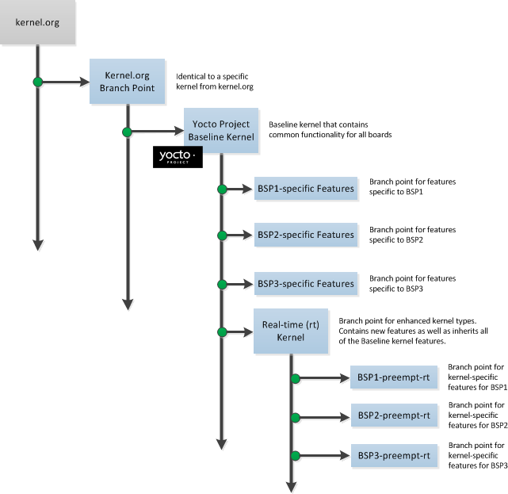

Copyright © 2010-2013 Linux Foundation
Permission is granted to copy, distribute and/or modify this document under the terms of the Creative Commons Attribution-Share Alike 2.0 UK: England & Wales as published by Creative Commons.
| Revision History | |
|---|---|
| Revision 0.9 | 24 November 2010 |
| The initial document draft released with the Yocto Project 0.9 Release. | |
| Revision 1.0 | 6 April 2011 |
| Released with the Yocto Project 1.0 Release. | |
| Revision 1.0.1 | 23 May 2011 |
| Released with the Yocto Project 1.0.1 Release. | |
| Revision 1.1 | 6 October 2011 |
| Released with the Yocto Project 1.1 Release. | |
| Revision 1.2 | April 2012 |
| Released with the Yocto Project 1.2 Release. | |
| Revision 1.3 | October 2012 |
| Released with the Yocto Project 1.3 Release. | |
| Revision 1.4 | Sometime in 2013 |
| Released with the Yocto Project 1.4 Release. | |
Table of Contents
Table of Contents
The Yocto Project presents kernels as a fully patched, history-clean Git repositories. Each repository represents selected features, board support, and configurations extensively tested by the Yocto Project. Yocto Project kernels allow the end user to leverage community best practices to seamlessly manage the development, build and debug cycles.
This manual describes Yocto Project kernels by providing information on history, organization, benefits, and use. The manual consists of two sections:
Concepts: Describes concepts behind a kernel. You will understand how a kernel is organized and why it is organized in the way it is. You will understand the benefits of a kernel's organization and the mechanisms used to work with the kernel and how to apply it in your design process.
Using a Kernel: Describes best practices and "how-to" information that lets you put a kernel to practical use. Some examples are how to examine changes in a branch and how to save kernel modifications.
For more information on the Linux kernel, see the following links:
The Linux Foundation's guide for kernel development process - http://www.linuxfoundation.org/content/1-guide-kernel-development-process
A fairly encompassing guide on Linux kernel development - http://git.kernel.org/?p=linux/kernel/git/torvalds/linux-2.6.git;a=blob_plain;f=Documentation/HOWTO;hb=HEAD
For more discussion on the Yocto Project kernel, you can see these sections in the Yocto Project Development Manual:
For general information on the Yocto Project, visit the website at http://www.yoctoproject.org.
Table of Contents
This chapter provides conceptual information about the kernel:
Kernel Goals
Kernel Development and Maintenance Overview
Kernel Architecture
Kernel Tools
The complexity of embedded kernel design has increased dramatically. Whether it is managing multiple implementations of a particular feature or tuning and optimizing board specific features, both flexibility and maintainability are key concerns. The Linux kernels available through the Yocto Project are presented with the embedded developer's needs in mind and have evolved to assist in these key concerns. For example, prior methods such as applying hundreds of patches to an extracted tarball have been replaced with proven techniques that allow easy inspection, bisection and analysis of changes. Application of these techniques also creates a platform for performing integration and collaboration with the thousands of upstream development projects.
With all these considerations in mind, the Yocto Project's kernel and development team strives to attain these goals:
Allow the end user to leverage community best practices to seamlessly manage the development, build and debug cycles.
Create a platform for performing integration and collaboration with the thousands of upstream development projects that exist.
Provide mechanisms that support many different work flows, front-ends and management techniques.
Deliver the most up-to-date kernel possible while still ensuring that the baseline kernel is the most stable official release.
Include major technological features as part of the Yocto Project's upward revision strategy.
Present a kernel Git repository that, similar to the upstream
kernel.org tree,
has a clear and continuous history.
Deliver a key set of supported kernel types, where each type is tailored to meet a specific use (e.g. networking, consumer, devices, and so forth).
Employ a Git branching strategy that, from a developer's point of view,
results in a linear path from the baseline kernel.org,
through a select group of features and
ends with their BSP-specific commits.
Kernels available through the Yocto Project, like other kernels, are based off the Linux
kernel releases from http://www.kernel.org.
At the beginning of a major development cycle, the Yocto Project team
chooses its kernel based on factors such as release timing, the anticipated release
timing of final upstream kernel.org versions, and Yocto Project
feature requirements.
Typically, the kernel chosen is in the
final stages of development by the community.
In other words, the kernel is in the release
candidate or "rc" phase and not yet a final release.
But, by being in the final stages of external development, the team knows that the
kernel.org final release will clearly be within the early stages of
the Yocto Project development window.
This balance allows the team to deliver the most up-to-date kernel possible, while still ensuring that the team has a stable official release for the baseline Linux kernel version.
The ultimate source for kernels available through the Yocto Project are released kernels
from kernel.org.
In addition to a foundational kernel from kernel.org, the
kernels available contain a mix of important new mainline
developments, non-mainline developments (when there is no alternative),
Board Support Package (BSP) developments,
and custom features.
These additions result in a commercially released Yocto Project Linux kernel that caters
to specific embedded designer needs for targeted hardware.
Once a kernel is officially released, the Yocto Project team goes into their next development cycle, or upward revision (uprev) cycle, while still continuing maintenance on the released kernel. It is important to note that the most sustainable and stable way to include feature development upstream is through a kernel uprev process. Back-porting hundreds of individual fixes and minor features from various kernel versions is not sustainable and can easily compromise quality.
During the uprev cycle, the Yocto Project team uses an ongoing analysis of
kernel development, BSP support, and release timing to select the best
possible kernel.org version.
The team continually monitors community kernel
development to look for significant features of interest.
The team does consider back-porting large features if they have a significant advantage.
User or community demand can also trigger a back-port or creation of new
functionality in the Yocto Project baseline kernel during the uprev cycle.
Generally speaking, every new kernel both adds features and introduces new bugs. These consequences are the basic properties of upstream kernel development and are managed by the Yocto Project team's kernel strategy. It is the Yocto Project team's policy to not back-port minor features to the released kernel. They only consider back-porting significant technological jumps - and, that is done after a complete gap analysis. The reason for this policy is that back-porting any small to medium sized change from an evolving kernel can easily create mismatches, incompatibilities and very subtle errors.
These policies result in both a stable and a cutting edge kernel that mixes forward ports of existing features and significant and critical new functionality. Forward porting functionality in the kernels available through the Yocto Project kernel can be thought of as a "micro uprev." The many “micro uprevs” produce a kernel version with a mix of important new mainline, non-mainline, BSP developments and feature integrations. This kernel gives insight into new features and allows focused amounts of testing to be done on the kernel, which prevents surprises when selecting the next major uprev. The quality of these cutting edge kernels is evolving and the kernels are used in leading edge feature and BSP development.
This section describes the architecture of the kernels available through the Yocto Project and provides information on the mechanisms used to achieve that architecture.
As mentioned earlier, a key goal of the Yocto Project is to present the
developer with
a kernel that has a clear and continuous history that is visible to the user.
The architecture and mechanisms used achieve that goal in a manner similar to the
upstream kernel.org.
You can think of a Yocto Project kernel as consisting of a baseline Linux kernel with added features logically structured on top of the baseline. The features are tagged and organized by way of a branching strategy implemented by the source code manager (SCM) Git. For information on Git as applied to the Yocto Project, see the "Git" section in the Yocto Project Development Manual.
The result is that the user has the ability to see the added features and the commits that make up those features. In addition to being able to see added features, the user can also view the history of what made up the baseline kernel.
The following illustration shows the conceptual Yocto Project kernel.
|  |
In the illustration, the "Kernel.org Branch Point" marks the specific spot (or release) from which the Yocto Project kernel is created. From this point "up" in the tree, features and differences are organized and tagged.
The "Yocto Project Baseline Kernel" contains functionality that is common to every kernel type and BSP that is organized further up the tree. Placing these common features in the tree this way means features don't have to be duplicated along individual branches of the structure.
From the Yocto Project Baseline Kernel, branch points represent specific functionality for individual BSPs as well as real-time kernels. The illustration represents this through three BSP-specific branches and a real-time kernel branch. Each branch represents some unique functionality for the BSP or a real-time kernel.
In this example structure, the real-time kernel branch has common features for all real-time kernels and contains more branches for individual BSP-specific real-time kernels. The illustration shows three branches as an example. Each branch points the way to specific, unique features for a respective real-time kernel as they apply to a given BSP.
The resulting tree structure presents a clear path of markers (or branches) to the developer that, for all practical purposes, is the kernel needed for any given set of requirements.
The Yocto Project team creates kernel branches at points where functionality is no longer shared and thus, needs to be isolated. For example, board-specific incompatibilities would require different functionality and would require a branch to separate the features. Likewise, for specific kernel features, the same branching strategy is used.
This branching strategy results in a tree that has features organized to be specific for particular functionality, single kernel types, or a subset of kernel types. This strategy also results in not having to store the same feature twice internally in the tree. Rather, the kernel team stores the unique differences required to apply the feature onto the kernel type in question.
BSP-specific code additions are handled in a similar manner to kernel-specific additions. Some BSPs only make sense given certain kernel types. So, for these types, the team creates branches off the end of that kernel type for all of the BSPs that are supported on that kernel type. From the perspective of the tools that create the BSP branch, the BSP is really no different than a feature. Consequently, the same branching strategy applies to BSPs as it does to features. So again, rather than store the BSP twice, the team only stores the unique differences for the BSP across the supported multiple kernels.
While this strategy can result in a tree with a significant number of branches, it is
important to realize that from the developer's point of view, there is a linear
path that travels from the baseline kernel.org, through a select
group of features and ends with their BSP-specific commits.
In other words, the divisions of the kernel are transparent and are not relevant
to the developer on a day-to-day basis.
From the developer's perspective, this path is the "master" branch.
The developer does not need to be aware of the existence of any other branches at all.
Of course, there is value in the existence of these branches
in the tree, should a person decide to explore them.
For example, a comparison between two BSPs at either the commit level or at the line-by-line
code diff level is now a trivial operation.
Working with the kernel as a structured tree follows recognized community best practices. In particular, the kernel as shipped with the product, should be considered an "upstream source" and viewed as a series of historical and documented modifications (commits). These modifications represent the development and stabilization done by the Yocto Project kernel development team.
Because commits only change at significant release points in the product life cycle, developers can work on a branch created from the last relevant commit in the shipped Yocto Project kernel. As mentioned previously, the structure is transparent to the developer because the kernel tree is left in this state after cloning and building the kernel.
The Source Code Manager (SCM) is Git.
This SCM is the obvious mechanism for meeting the previously mentioned goals.
Not only is it the SCM for kernel.org but,
Git continues to grow in popularity and supports many different work flows,
front-ends and management techniques.
You can find documentation on Git at http://git-scm.com/documentation. You can also get an introduction to Git as it applies to the Yocto Project in the "Git" section in the Yocto Project Development Manual. These referenced sections overview Git and describe a minimal set of commands that allows you to be functional using Git.
Kernel configuration, along with kernel features, defines how a kernel image is built for the Yocto Project. Through configuration settings, you can customize a Yocto Project kernel to be specific to particular hardware. For example, you can specify sound support or networking support. This section describes basic concepts behind Kernel configuration within the Yocto Project and references you to other areas for specific configuration applications.
Conceptually, configuration of a Yocto Project kernel occurs similarly to that needed for any
Linux kernel.
The build process for a Yocto Project kernel uses a .config file, which
is created through the Linux Kernel Configuration (LKC) tool.
You can directly set various configurations in the
.config file by using the menuconfig
tool as built by BitBake.
You can also define configurations in the file by using configuration fragments.
.config file directly.
Here are some brief descriptions of the ways you can affect the
.config file:
The menuconfig Tool:
One of many front-ends that allows you to define kernel configurations.
Some others are make config,
make nconfig, and make gconfig.
In the Yocto Project environment, you must use BitBake to build the
menuconfig tool before you can use it to define
configurations:
$ bitbake linux-yocto -c menuconfig
After the tool is built, you can interact with it normally.
You can see how menuconfig is used to change a simple
kernel configuration in the
"Configuring the Kernel"
section of the Yocto Project Development Manual.
For general information on menuconfig, see
http://en.wikipedia.org/wiki/Menuconfig.
Configuration Fragments: A file with a
list of kernel options just as they would appear syntactically in the
.config file.
Configuration fragments are typically logical groupings and are assembled
by the OpenEmbedded build system to produce input used by the LKC
that ultimately generates the .config file.
The
KERNEL_FEATURES
variable can be used to list configuration fragments.
For further discussion on applying configuration fragments, see the
"Linux Kernel Configuration"
section in the Yocto Project Board Support Package (BSP) Guide.
Since most standard workflows involve moving forward with an existing tree by continuing to add and alter the underlying baseline, the tools that manage the Yocto Project's kernel construction are largely hidden from the developer to present a simplified view of the kernel for ease of use.
Fundamentally, the kernel tools that manage and construct the Yocto Project kernel accomplish the following:
Group patches into named, reusable features.
Allow top-down control of included features.
Bind kernel configurations to kernel patches and features.
Present a seamless Git repository that blends Yocto Project value
with the kernel.org history and development.
This chapter describes how to accomplish tasks involving a kernel's tree structure. The information is designed to help the developer that wants to modify the Yocto Project kernel and contribute changes upstream to the Yocto Project. The information covers the following:
Tree construction
Build strategies
Workflow examples
This section describes construction of the Yocto Project kernel source repositories as accomplished by the Yocto Project team to create kernel repositories. These kernel repositories are found under the heading "Yocto Linux Kernel" at http://git.yoctoproject.org/cgit.cgi and can be shipped as part of a Yocto Project release. The team creates these repositories by compiling and executing the set of feature descriptions for every BSP/feature in the product. Those feature descriptions list all necessary patches, configuration, branching, tagging and feature divisions found in a kernel. Thus, the Yocto Project kernel repository (or tree) is built.
The existence of this tree allows you to access and clone a particular Yocto Project kernel repository and use it to build images based on their configurations and features.
You can find the files used to describe all the valid features and BSPs
in the Yocto Project kernel in any clone of the Yocto Project kernel source repository
Git tree.
For example, the following command clones the Yocto Project baseline kernel that
branched off of linux.org version 3.4:
$ git clone git://git.yoctoproject.org/linux-yocto-3.4
For another example of how to set up a local Git repository of the Yocto Project kernel files, see the "Yocto Project Kernel" bulleted item in the Yocto Project Development Manual.
Once you have cloned the kernel Git repository on your local machine, you can
switch to the meta branch within the repository.
Here is an example that assumes the local Git repository for the kernel is in
a top-level directory named linux-yocto-3.4:
$ cd ~/linux-yocto-3.4
$ git checkout -b meta origin/meta
Once you have checked out and switched to the meta branch,
you can see a snapshot of all the kernel configuration and feature descriptions that are
used to build that particular kernel repository.
These descriptions are in the form of .scc files.
You should realize, however, that browsing your local kernel repository for feature descriptions and patches is not an effective way to determine what is in a particular kernel branch. Instead, you should use Git directly to discover the changes in a branch. Using Git is an efficient and flexible way to inspect changes to the kernel. For examples showing how to use Git to inspect kernel commits, see the following sections in this chapter.
The following steps describe what happens when the Yocto Project Team constructs the Yocto Project kernel source Git repository (or tree) found at http://git.yoctoproject.org/cgit.cgi given the introduction of a new top-level kernel feature or BSP. These are the actions that effectively create the tree that includes the new feature, patch or BSP:
A top-level kernel feature is passed to the kernel build subsystem. Normally, this feature is a BSP for a particular kernel type.
The file that describes the top-level feature is located by searching these system directories:
The in-tree kernel-cache directories, which are located
in meta/cfg/kernel-cache
Areas pointed to by SRC_URI statements
found in recipes
For a typical build, the target of the search is a
feature description in an .scc file
whose name follows this format:
<bsp_name>-<kernel_type>.scc
Once located, the feature description is either compiled into a simple script of actions, or into an existing equivalent script that is already part of the shipped kernel.
Extra features are appended to the top-level feature description.
These features can come from the
KERNEL_FEATURES
variable in recipes.
Each extra feature is located, compiled and appended to the script as described in step three.
The script is executed to produce a series of meta-*
directories.
These directories are descriptions of all the branches, tags, patches and configurations that
need to be applied to the base Git repository to completely create the
source (build) branch for the new BSP or feature.
The base repository is cloned, and the actions
listed in the meta-* directories are applied to the
tree.
The Git repository is left with the desired branch checked out and any required branching, patching and tagging has been performed.
The kernel tree is now ready for developer consumption to be locally cloned, configured, and built into a Yocto Project kernel specific to some target hardware.
The generated meta-* directories add to the kernel
as shipped with the Yocto Project release.
Any add-ons and configuration data are applied to the end of an existing branch.
The full repository generation that is found in the
official Yocto Project kernel repositories at
http://git.yoctoproject.org/cgit.cgi
is the combination of all supported boards and configurations.
The technique the Yocto Project team uses is flexible and allows for seamless blending of an immutable history with additional patches specific to a deployment. Any additions to the kernel become an integrated part of the branches.
Once a local Git repository of the Yocto Project kernel exists on a development system, you can consider the compilation phase of kernel development - building a kernel image. Some prerequisites exist that are validated by the build process before compilation starts:
The
SRC_URI points
to the kernel Git repository.
A BSP build branch exists. This branch has the following form:
<kernel_type>/<bsp_name>
The OpenEmbedded build system makes sure these conditions exist before attempting compilation. Other means, however, do exist, such as as bootstrapping a BSP, see the "Workflow Examples".
Before building a kernel, the build process verifies the tree
and configures the kernel by processing all of the
configuration "fragments" specified by feature descriptions in the .scc
files.
As the features are compiled, associated kernel configuration fragments are noted
and recorded in the meta-* series of directories in their compilation order.
The fragments are migrated, pre-processed and passed to the Linux Kernel
Configuration subsystem (lkc) as raw input in the form
of a .config file.
The lkc uses its own internal dependency constraints to do the final
processing of that information and generates the final .config file
that is used during compilation.
Using the board's architecture and other relevant values from the board's template, kernel compilation is started and a kernel image is produced.
The other thing that you notice once you configure a kernel is that
the build process generates a build tree that is separate from your kernel's local Git
source repository tree.
This build tree has a name that uses the following form, where
${MACHINE} is the metadata name of the machine (BSP) and "kernel_type" is one
of the Yocto Project supported kernel types (e.g. "standard"):
linux-${MACHINE}-<kernel_type>-build
The existing support in the kernel.org tree achieves this
default functionality.
This behavior means that all the generated files for a particular machine or BSP are now in
the build tree directory.
The files include the final .config file, all the .o
files, the .a files, and so forth.
Since each machine or BSP has its own separate build directory in its own separate branch
of the Git repository, you can easily switch between different builds.
As previously noted, the Yocto Project kernel has built-in Git integration. However, these utilities are not the only way to work with the kernel repository. The Yocto Project has not made changes to Git or to other tools that would invalidate alternate workflows. Additionally, the way the kernel repository is constructed results in using only core Git functionality, thus allowing any number of tools or front ends to use the resulting tree.
This section contains several workflow examples. Many of the examples use Git commands. You can find Git documentation at http://git-scm.com/documentation. You can find a simple overview of using Git with the Yocto Project in the "Git" section of the Yocto Project Development Manual.
A common question when working with a kernel is: "What changes have been applied to this tree?"
In projects that have a collection of directories that contain patches to the kernel, it is possible to inspect or "grep" the contents of the directories to get a general feel for the changes. This sort of patch inspection is not an efficient way to determine what has been done to the kernel. The reason it is inefficient is because there are many optional patches that are selected based on the kernel type and the feature description. Additionally, patches could exist in directories that are not included in the search.
A more efficient way to determine what has changed in the branch is to use Git and inspect or search the kernel tree. This method gives you a full view of not only the source code modifications, but also provides the reasons for the changes.
Following are a few examples that show how to use Git commands to examine changes. Because Git repositories in the Yocto Project do not break existing Git functionality, and because there exists many permutations of these types of Git commands, many methods exist by which you can discover changes.
kernel.org history is blended with Yocto Project
kernel changes.
You can form ranges by using branch names from the kernel tree as the
upper and lower commit markers with the Git commands.
You can see the branch names through the web interface to the
Yocto Project source repositories at
http://git.yoctoproject.org/cgit.cgi.
For example, the branch names for the linux-yocto-3.4
kernel repository can be seen at
http://git.yoctoproject.org/cgit.cgi/linux-yocto-3.4/refs/heads.
To see a full range of the changes, use the
git whatchanged command and specify a commit range
for the branch (<commit>..<commit>).
Here is an example that looks at what has changed in the
emenlow branch of the
linux-yocto-3.4 kernel.
The lower commit range is the commit associated with the
standard/base branch, while
the upper commit range is the commit associated with the
standard/emenlow branch.
$ git whatchanged origin/standard/base..origin/standard/emenlow
To see a summary of changes use the git log command.
Here is an example using the same branches:
$ git log --oneline origin/standard/base..origin/standard/emenlow
The git log output might be more useful than
the git whatchanged as you get
a short, one-line summary of each change and not the entire commit.
If you want to see code differences associated with all the changes, use
the git diff command.
Here is an example:
$ git diff origin/standard/base..origin/standard/emenlow
You can see the commit log messages and the text differences using the
git show command:
Here is an example:
$ git show origin/standard/base..origin/standard/emenlow
You can create individual patches for each change by using the
git format-patch command.
Here is an example that that creates patch files for each commit and
places them in your Documents directory:
$ git format-patch -o $HOME/Documents origin/standard/base..origin/standard/emenlow
Developers use tags in the Yocto Project kernel tree to divide changes for significant features or branches. Once you know a particular tag, you can use Git commands to show changes associated with the tag and find the branches that contain the feature.
kernel.org, and feature tags are all
present, there could be many tags.
The git show <tag> command shows changes that are tagged by
a feature.
Here is an example that shows changes tagged by the systemtap
feature:
$ git show systemtap
You can use the git branch --contains <tag> command
to show the branches that contain a particular feature.
This command shows the branches that contain the systemtap
feature:
$ git branch --contains systemtap
You can use many other comparisons to isolate BSP and kernel changes.
For example, you can compare against kernel.org tags
such as the v3.4 tag.
Another common operation is to build a BSP supplied by the Yocto Project, make some changes, rebuild, and then test. Those local changes often need to be exported, shared or otherwise maintained.
Since the Yocto Project kernel source tree is backed by Git, this activity is much easier as compared to with previous releases. Because Git tracks file modifications, additions and deletions, it is easy to modify the code and later realize that you need to save the changes. It is also easy to determine what has changed. This method also provides many tools to commit, undo and export those modifications.
This section and its sub-sections, describe general application of Git's
push and pull commands, which are used to
get your changes upstream or source your code from an upstream repository.
The Yocto Project provides scripts that help you work in a collaborative development
environment.
For information on these scripts, see the
"Using Scripts to Push a Change
Upstream and Request a Pull" and
"Using Email to Submit a Patch"
sections in the Yocto Project Development Manual.
There are many ways to save kernel modifications. The technique employed depends on the destination for the patches:
Bulk storage
Internal sharing either through patches or by using Git
External submissions
Exporting for integration into another Source Code Manager (SCM)
Because of the following list of issues, the destination of the patches also influences the method for gathering them:
Bisectability
Commit headers
Division of subsystems for separate submission or review
This section describes how you can "bulk" export changes that have not been separated or divided. This situation works well when you are simply storing patches outside of the kernel source repository, either permanently or temporarily, and you are not committing incremental changes during development.
# bulk export of ALL modifications without separation or division
# of the changes
$ git add .
$ git commit -s -a -m <msg>
or
$ git commit -s -a # and interact with $EDITOR
The previous operations capture all the local changes in the project source tree in a single Git commit. And, that commit is also stored in the project's source tree.
Once the changes are exported, you can restore them manually using a template
or through integration with the default_kernel.
This section describes how to save modifications when you are making incremental commits or practicing planned sharing. The examples in this section assume that you have incrementally committed changes to the tree during development and now need to export them. The sections that follow describe how you can export your changes internally through either patches or by using Git commands.
During development, the following commands are of interest. For full Git documentation, refer to the Git documentation at http://github.com.
# edit a file
$ vi <path>/file
# stage the change
$ git add <path>/file
# commit the change
$ git commit -s
# remove a file
$ git rm <path>/file
# commit the change
$ git commit -s
... etc.
Distributed development with Git is possible when you use a universally
agreed-upon unique commit identifier (set by the creator of the commit) that maps to a
specific change set with a specific parent.
This identifier is created for you when
you create a commit, and is re-created when you amend, alter or re-apply
a commit.
As an individual in isolation, this is of no interest.
However, if you
intend to share your tree with normal Git push and
pull operations for
distributed development, you should consider the ramifications of changing a
commit that you have already shared with others.
Assuming that the changes have not been pushed upstream, or pulled into another repository, you can update both the commit content and commit messages associated with development by using the following commands:
$ Git add <path>/file
$ Git commit --amend
$ Git rebase or Git rebase -i
Again, assuming that the changes have not been pushed upstream, and that
no pending works-in-progress exist (use git status to check), then
you can revert (undo) commits by using the following commands:
# remove the commit, update working tree and remove all
# traces of the change
$ git reset --hard HEAD^
# remove the commit, but leave the files changed and staged for re-commit
$ git reset --soft HEAD^
# remove the commit, leave file change, but not staged for commit
$ git reset --mixed HEAD^
You can create branches, "cherry-pick" changes, or perform any number of Git
operations until the commits are in good order for pushing upstream
or for pull requests.
After a push or pull command,
commits are normally considered
"permanent" and you should not modify them.
If the commits need to be changed, you can incrementally do so with new commits.
These practices follow standard Git workflow and the kernel.org best
practices, which is recommended.
This section describes how you can extract committed changes from a working directory by exporting them as patches. Once the changes have been extracted, you can use the patches for upstream submission, place them in a Yocto Project template for automatic kernel patching, or apply them in many other common uses.
This example shows how to create a directory with sequentially numbered patches.
Once the directory is created, you can apply it to a repository using the
git am command to reproduce the original commit and all
the related information such as author, date, commit log, and so forth.
# <first-commit> can be a tag if one was created before development
# began. It can also be the parent branch if a branch was created
# before development began.
$ git format-patch -o <dir> <first commit>..<last commit>
In other words:
# Identify commits of interest.
# If the tree was tagged before development
$ git format-patch -o <save dir> <tag>
# If no tags are available
$ git format-patch -o <save dir> HEAD^ # last commit
$ git format-patch -o <save dir> HEAD^^ # last 2 commits
$ git whatchanged # identify last commit
$ git format-patch -o <save dir> <commit id>
$ git format-patch -o <save dir> <rev-list>
This section describes how you can export changes from a working directory by pushing the changes into a master repository or by making a pull request. Once you have pushed the changes to the master repository, you can then pull those same changes into a new kernel build at a later time.
Use this command form to push the changes:
$ git push ssh://<master_server>/<path_to_repo>
<local_branch>:<remote_branch>
For example, the following command pushes the changes from your local branch
yocto/standard/common-pc/base to the remote branch with the same name
in the master repository //git.mycompany.com/pub/git/kernel-3.4.
$ git push ssh://git.mycompany.com/pub/git/kernel-3.4 \
yocto/standard/common-pc/base:yocto/standard/common-pc/base
A pull request entails using the git request-pull command to compose
an email to the
maintainer requesting that a branch be pulled into the master repository, see
http://github.com/guides/pull-requests for an example.
git stash or branching can also be used to save
changes, but are not covered in this document.
This section describes how to export changes for external upstream submission. If the patch series is large or the maintainer prefers to pull changes, you can submit these changes by using a pull request. However, it is common to send patches as an email series. This method allows easy review and integration of the changes.
Documentation/SubmittingPatches (in any linux kernel source tree)
The messages used to commit changes are a large part of these standards. Consequently, be sure that the headers for each commit have the required information. For information on how to follow the Yocto Project commit message standards, see the "How to Submit a Change" section in the Yocto Project Development Manual.
If the initial commits were not properly documented or do not meet those standards,
you can re-base by using the git rebase -i command to
manipulate the commits and
get them into the required format.
Other techniques such as branching and cherry-picking commits are also viable options.
Once you complete the commits, you can generate the email that sends the patches
to the maintainer(s) or lists that review and integrate changes.
The command git send-email is commonly used to ensure
that patches are properly
formatted for easy application and avoid mailer-induced patch damage.
The following is an example of dumping patches for external submission:
# dump the last 4 commits
$ git format-patch --thread -n -o ~/rr/ HEAD^^^^
$ git send-email --compose --subject '[RFC 0/N] <patch series summary>' \
--to foo@yoctoproject.org --to bar@yoctoproject.org \
--cc list@yoctoproject.org ~/rr
# the editor is invoked for the 0/N patch, and when complete the entire
# series is sent via email for review
When you want to export changes for import into another Source Code Manager (SCM), you can use any of the previously discussed techniques. However, if the patches are manually applied to a secondary tree and then that tree is checked into the SCM, you can lose change information such as commit logs. This process is not recommended.
Many SCMs can directly import Git commits, or can translate Git patches so that information is not lost. Those facilities are SCM-dependent and you should use them whenever possible.
This section describes kernel development in an SCM other than Git, which is not the same as exporting changes to another SCM described earlier. For this scenario, you use the OpenEmbedded build system to develop the kernel in a different SCM. The following must be true for you to accomplish this:
The delivered Yocto Project kernel must be exported into the second SCM.
Development must be exported from that secondary SCM into a format that can be used by the OpenEmbedded build system.
Depending on the SCM, it might be possible to export the entire Yocto Project kernel Git repository, branches and all, into a new environment. This method is preferred because it has the most flexibility and potential to maintain the meta data associated with each commit.
When a direct import mechanism is not available, it is still possible to export a branch (or series of branches) and check them into a new repository.
The following commands illustrate some of the steps you could use to
import the yocto/standard/common-pc/base
kernel into a secondary SCM:
$ git checkout yocto/standard/common-pc/base
$ cd .. ; echo linux/.git > .cvsignore
$ cvs import -m "initial import" linux MY_COMPANY start
You could now relocate the CVS repository and use it in a centralized manner.
The following commands illustrate how you can condense and merge two BSPs into a second SCM:
$ git checkout yocto/standard/common-pc/base
$ git merge yocto/standard/common-pc-64/base
# resolve any conflicts and commit them
$ cd .. ; echo linux/.git > .cvsignore
$ cvs import -m "initial import" linux MY_COMPANY start
This section overviews the process of creating a BSP based on an existing similar BSP. The information is introductory in nature and does not provide step-by-step examples. For detailed information on how to create a new BSP, see the "Creating a New BSP Layer Using the yocto-bsp Script" section in the Yocto Project Board Support Package (BSP) Developer's Guide, or see the Transcript:_creating_one_generic_Atom_BSP_from_another wiki page.
The basic steps you need to follow are:
Make sure you have set up a local Source Directory: You must create a local Source Directory by either creating a Git repository (recommended) or extracting a Yocto Project release tarball.
Choose an existing BSP available with the Yocto Project: Try to map your board features as closely to the features of a BSP that is already supported and exists in the Yocto Project. Starting with something as close as possible to your board makes developing your BSP easier. You can find all the BSPs that are supported and ship with the Yocto Project on the Yocto Project's Download page at http://www.yoctoproject.org/download.
Be sure you have the Base BSP: You need to either have a local Git repository of the base BSP set up or have downloaded and extracted the files from a release BSP tarball. Either method gives you access to the BSP source files.
Make a copy of the existing BSP, thus isolating your new BSP work: Copying the existing BSP file structure gives you a new area in which to work.
Make configuration and recipe changes to your new BSP:
Configuration changes involve the files in the BSP's conf
directory.
Changes include creating a machine-specific configuration file and editing the
layer.conf file.
The configuration changes identify the kernel you will be using.
Recipe changes include removing, modifying, or adding new recipe files that
instruct the build process on what features to include in the image.
Prepare for the build:
Before you actually initiate the build, you need to set up the build environment
by sourcing the environment initialization script.
After setting up the environment, you need to make some build configuration
changes to the local.conf and bblayers.conf
files.
Build the image:
The OpenEmbedded build system uses BitBake to create the image.
You need to decide on the type of image you are going to build (e.g. minimal, base,
core, sato, and so forth) and then start the build using the bitbake
command.
If kernel images are being built with "-dirty" on the end of the version string, this simply means that modifications in the source directory have not been committed.
$ git status
You can use the above Git command to report modified, removed, or added files. You should commit those changes to the tree regardless of whether they will be saved, exported, or used. Once you commit the changes you need to rebuild the kernel.
To brute force pickup and commit all such pending changes, enter the following:
$ git add .
$ git commit -s -a -m "getting rid of -dirty"
Next, rebuild the kernel.